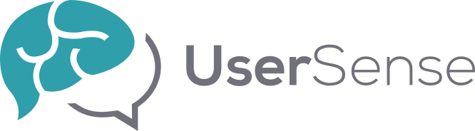
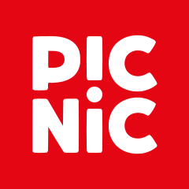
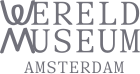
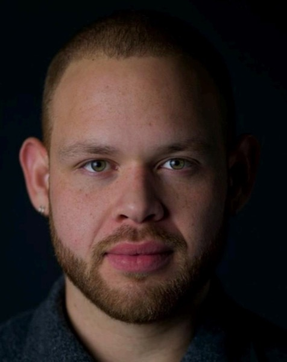

UX / Product Designer
I design digital
experiences with
purpose.
I'm a UX and product designer who turns complicated systems in healthcare, retail, and culture into experiences people actually want to use — grounded in research, not assumptions.
Worked with



I highly recommend him to any organization.
Designer.
Researcher.
Problem solver.
I combine UX research and product design to get from a fuzzy problem to something people can actually use — grounded in real behavior, not assumptions.
I build intuitive digital experiences by pairing a solid design foundation with storytelling and insights straight from the people who'll use what I make. Outside of that, I shoot photography and bring the same eye for detail to every project.
Selected work

User Sense
46% of testers hit technical problems on this UX research platform. I redesigned sign-up, screening, and the dashboard around real survey data.
View case study
Erasmus MC
Cardiology patients kept forgetting to log their fluid intake on paper. I helped design Druppie, a mascot-led tracker that made it automatic.
View case study
Clubleaf × IceMobile
Only 43% of Picnic shoppers considered sustainability while shopping. I helped design nudges and rewards that changed that — without the lecture.
View case study
Wereldmuseum Amsterdam
After rebranding, the museum struggled to feel relevant to its neighborhood. I designed a concept exhibition that invited residents to become part of the story.
View case studyHow I work
Discover
Understanding the real problem before jumping to solutions.
User interviews, contextual researchDefine
Turning research into a clear, testable problem statement.
Personas, journey mappingDesign
Exploring directions, then refining the one that earns its place.
Wireframes, prototypingTest
Putting the work in front of real people before calling it done.
Usability testingRefine
Closing the loop between what was tested and what ships.
Iteration, handoverWhat I do
Understanding people through interviews, surveys, and behavioral data before deciding what to design.
Turning research into concepts, flows, and screens that solve the right problem.
Zooming out from the screen to the whole experience: touchpoints, stakeholders, and the gaps between them.
Putting early work in front of real people, then acting on what breaks.
About me

I'm a UX and product designer, recently graduated from Rotterdam University of Applied Sciences, focused on the systems behind the interface — the incentives, habits, and institutional processes that decide whether people actually use what's designed for them.
That's looked like a mascot that gets cardiology patients to track their fluid intake without a paper chart, and a rewards system that nudges grocery shoppers toward sustainable choices without lecturing them.
Outside of that, I shoot photography and bring the same eye for detail to every project I design.
Education
- BSc Communication & Multimedia Design
- Rotterdam University of Applied Sciences · 2021–2025
- Photography
- Nederlandse Academie voor Beeldcreatie · 2017–2020
Languages
- Dutch & English
- Fluent
- Papiamento
- Native
- Spanish
- Conversational
Experience
UX Research
User Sense B.V.
Service Design
Wereldmuseum Amsterdam
UX/UI Design
InnovatieStudio, PostNL
Product Support & Development
Innovation in Motion
Photographer
Figa Fotografie
What people say
Read moreRead less"I know Hubert Figaroa as a student at CMD, and I have experienced him as someone who really stands out. He is critical, asks sharp questions, and dares to tackle difficult issues. In addition, he has a professional attitude and communicates clearly and purposefully. Hubert has an impressive talent for photography and visual design. He knows how to present concepts visually with a contemporary, creative vision. With his critical eye and creative approach, Hubert is a valuable addition to any team or project."
Read moreRead less"Hubert joined our team at the PostNL Innovation Studio as an intern from CMD. He brought an excellent mix of skills, curiosity, and a strong research mindset, which consistently added value to our projects. Beyond his technical abilities, Hubert was a great colleague—easy to work with, team-oriented, and always bringing positive energy to the group. He fit seamlessly into the team. I highly recommend him to any organization."
"Hubert and I worked together on PostNL's online validation flow (iDIN). He's a pleasant, easygoing person to collaborate with, and comes up with refreshing ideas."
Translated from Dutch.
Read moreRead lessHave a problem
worth solving?
Looking to start a new project or just want to say hi? Send a message below and I'll do my best to reply within 24 hrs — or email me directly at info@hubertfigaroa.com.